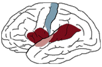
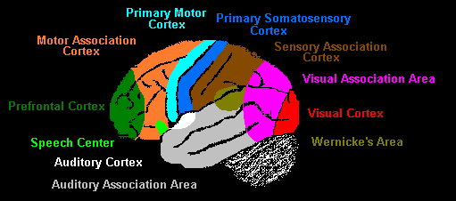

|  |
| Broca's area is the dark brown on the left of this image (which is the lower posterior part of the left frontal lobe in the brain). It is close to the motor areas, marked in blue. Wernicke's area is the dark brown on the right of this image (which is the upper part of the left temporal lobe in the brain). It is close to the auditory areas, marked in pink. (Click the image to get to the source of this diagram.) |
|  |
| Broca's area is bright green in this diagram, and labeled as the "Speech Center." Wernicke's area is shaded olive. (Click the image to get to the source of this diagram.) |